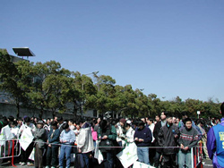
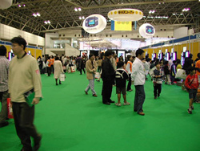
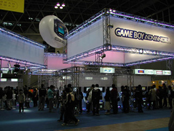
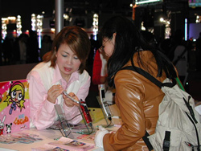
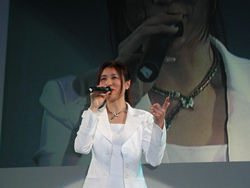
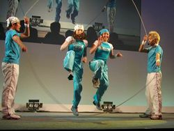
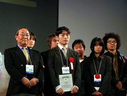
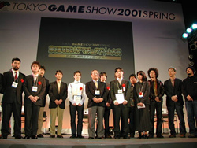
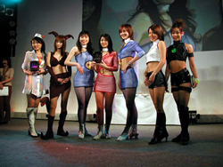

|
2001年4月1日
【速報】「東京ゲームショウ2001春」閉幕
| 21世紀最初のゲームショウも、いよいよ最終日です。雪まで降る寒さだった昨日とは打って変わった上天気に恵まれ、たくさんの来場者で賑わいました。日曜日とあって家族連れも多く、なごやかな雰囲気の1日でした。 |

よく晴れた空の下、開場を待ちます |

お子さまと家族連れのみ入場できるキッズコーナー |
| ネットワークの普及と技術の進歩により、「いつでもどこでも遊べるゲーム」が増えてきています。今回のゲームショウでも、ゲームボーイアドバンスやワンダースワンカラー、iモードやiアプリといった携帯・通信系のゲームが多数出展されています。また携帯端末で遊べるゲームなども出展され、ビジネスユーザーを中心に注目を集めていました。 |

お目当てのゲームの試遊に熱中する人々 |

気に入ったコンテンツはありましたか？ |
| 最終日の今日は、イベントステージで数多くのイベントが開催されました。その第一弾は、午前10時半から行われた「GO! GO!
プロモーション！」で、今後有望な新進アーティストを紹介するイベントです。 大場盛子さん、清水香里さん、五味美保さん、J-TRAPの4組が出演し、歌に、踊りにと、それぞれのパフォーマンスを存分に披露してくれました。 |

情熱的な歌いぶりが印象的な大場盛子さん |

J-TRAPのロープを使ったパフォーマンス |
アマチュアゲームクリエイターから作品を募集、優秀な作品を選ぶ「第3回CESAアマチュアゲーム大賞〜めざせ！未来のクリエイター」の発表授賞式が、イベントステージで行われました。
応募総数140作品のうち、ノミネートされた10作品は対戦格闘、パズルゲームなどから、既存のジャンルにあてはまらない斬新な作品などアマチュアとは思えない素晴らしい作品ばかりでした。この中から、大賞1作、優秀作2作、審査員特別賞2作が発表されました。
晴れて大賞を受賞したのは、デジタルエンタテインメントアカデミーの沖賢樹さんと市川由佳子さんによる「DISC UPPER」でした。ワンダーウィッチで製作した、ワンダースワンカラー用のパズルアクションです。沖さんは「1週間で作った作品で、時間もクオリティも納得いくものじゃないので（受賞したのは）申し訳ないです」と語りました。市川さんも、「ちゃんと機械で動くゲームを作ったのはこれが初めてなので、本当に意外です」と、驚きを隠せない模様でした。
審査員の一人であるナムコ・吉積信氏は「すごくハマりましたよ」と賛辞を贈りました。沖さんは、受賞の理由について「ワンダースワンだから、左右のコントローラを活かしたいと思って作りました。そこが評価されたんじゃないでしょうか」と語っていました。
|

沖さんと市川さん。記念の盾を受け取りました |

審査員と受賞者で記念撮影 |

バンダイ（左）、カプコン（中央）、マイクロソフト
（右） が受賞したコスチュームをステージで披露 |
各出展社のコンパニオンコスチュームの人気投票を3日間に渡って行った「輝け！ベストコスチューム
in TOKYO GAME SHOW 2001 SPRING」はカプコンがグランプリを、バンダイとマイクロソフトが準グランプリを獲得しました。おめでとうございます。 |
そして4月1日午後5時、「東京ゲームショウ2001春」は3日間の会期を終えました。本日の来場者数は4万5112人。会期中3日間の合計人数は11万8080人となりました。
21世紀を迎えて、多種多様に進化し続けるコンピュータゲーム。今回のゲームショウのテーマは「ゲームが開く21世紀エンターテインメント」でした。ネットワーク／通信技術の進歩、ゲームジャンルの多様化、そして次々と登場する新ハード。さまざまな要素のおかげで、ゲームは単なる娯楽の域を越え、全く新しい文化のひとつとして進化を続けています。
この、日本が世界に誇る文化の担い手が、一同に会した3日間。新しいハードの発表など、大きな話題もありました。来場者の皆様には、それぞれにエキサイティングな感動を味わっていただけたことだと思います。
次回「東京ゲームショウ2001秋」〈2001年10月12日（金）〜14日（日）予定〉でまたお会いできることを、心からお待ちしております。
|